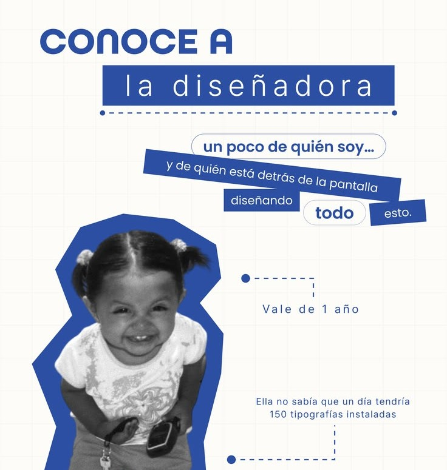

Claridad
Una buena marca se entiende en segundos. Quito lo que sobra para que tu mensaje llegue directo.
Margo | Diseño de Marca
Soy diseñadora UX/UI y estoy comenzando mi camino como freelance en diseño de marca. Detrás de cada pantalla hay una persona, y detrás de cada marca también.
Hace unos años no sabía que iba a terminar con 150 tipografías instaladas, pero sí que me encantaba crear cosas. Hoy convierto esa curiosidad en identidades que cuentan quién sos.

Una buena marca se entiende en segundos. Quito lo que sobra para que tu mensaje llegue directo.
Cada pieza, del logo a las redes, tiene que sentirse parte del mismo universo.
Tu visión es el punto de partida. Primero te escucho, después diseño.